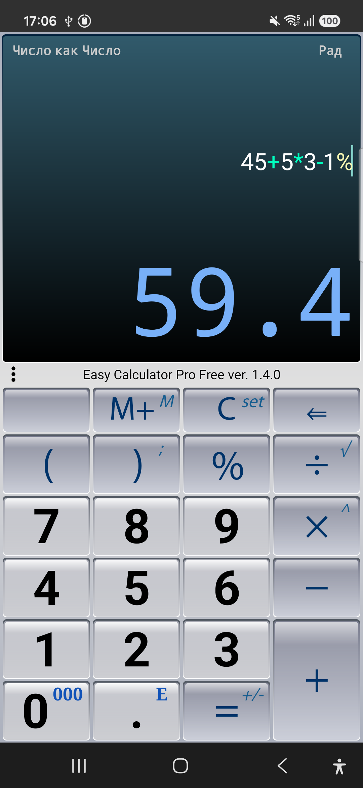
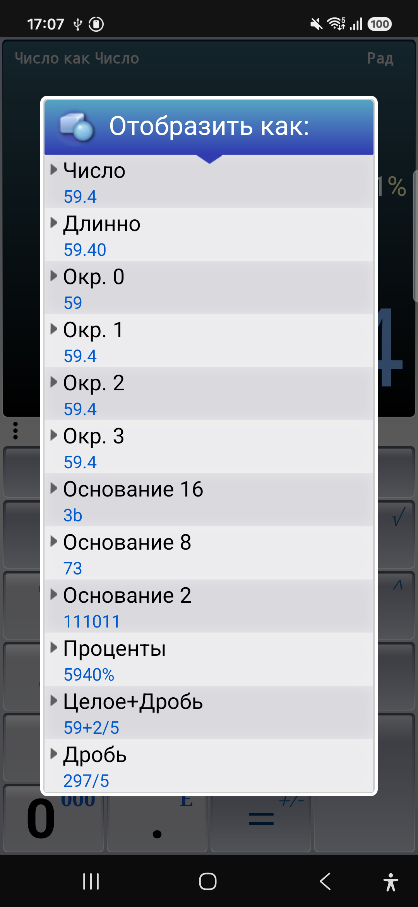
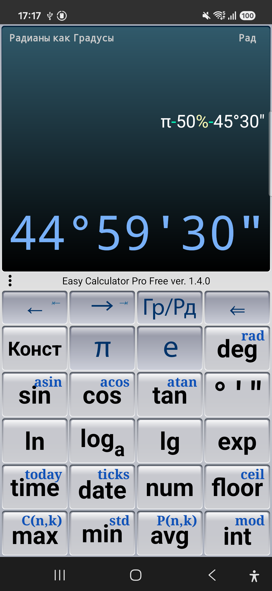
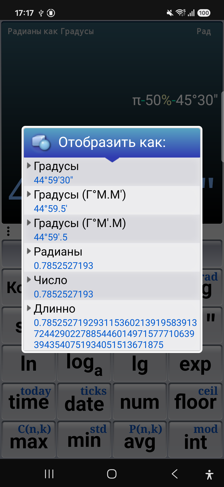
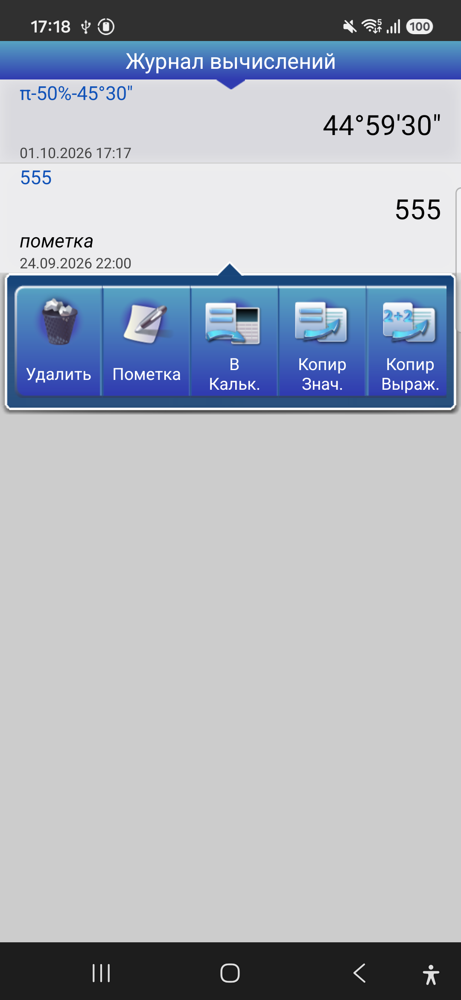
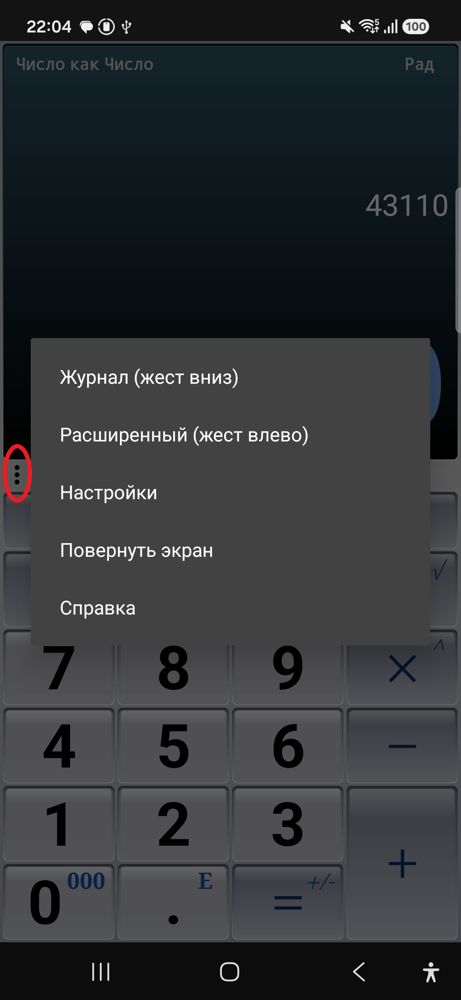

← Все приложения
Скриншоты






О приложении
Easy Calculator Pro — это удобный, наглядный и функциональный калькулятор для повседневных
расчетов, учебы и инженерных задач. Используйте его как быстрый карманный инструмент с вычислением процентов
и памятью либо переключитесь на расширенные научные вычисления.
Благодаря живому отображению всей формулы по мере ввода вы всегда контролируете ход вычислений и видите
структуру выражения.
Основные возможности
- Сверхвысокая точность: вычисления до 40 значащих цифр (в отличие от стандартных 15 цифр
у большинства аналогов).
- Умный ввод выражений: подсветка синтаксиса и наглядное выделение ошибок при вводе
формул.
- История вычислений: сохраняйте результаты, добавляйте заметки, отправляйте расчеты по
почте или возвращайте прошлые выражения в строку ввода.
- Продвинутые проценты: быстрый расчет чаевых, налогов, наценок и скидок.
- Гибкое форматирование ответов: обычные числа, дроби (например,
1.125 → 9/8 или 1 + 1/8), даты, проценты, а также системы счисления HEX,
OCT, BIN.
- Инженерные и тригонометрические функции: радианы, градусы, формат
«градусы-минуты-секунды» (DMS) и угловые меры
d°m.m', d°m'.m.
- Операции с датой и временем: подсчет смещений, периодов и интервалов прямо в строке
вычислений.
- Встроенные математические и физические константы.
- Сохранение состояния: приложение запоминает данные и историю между сессиями.
- Тактильный отклик (вибрация): подтверждение нажатия клавиш.
Примеры использования
- Скидки и чаевые:
7*2 + 1.5*4 + 10%
- Физика и константы:
√(G*Me/g) — вычисление радиуса Земли
- Смещение дат:
date(12; 05; 15) + 40*7 — вычисление даты через 40 недель
- Геометрия:
40 / tan(37°23') — определение высоты объекта по углу наклона
- Теория вероятностей:
C(4; 2) / C(50; 2) — расчет покерных комбинаций